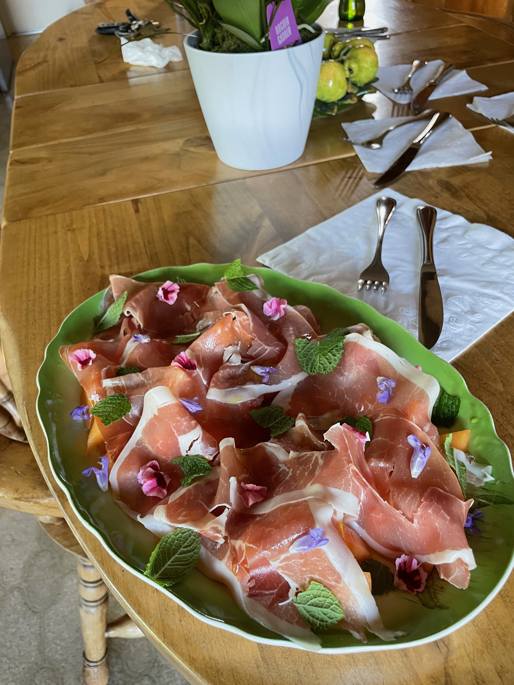

Prosciutto E Melone (Prosciutto and Melon)

Description
This classic Italian starter consists of the finest cured pork leg, sliced thinner than the ice your dad skates on with his ex-wife, draped over the best sliced melon the winter can offer. This extravagant dish is further accentuated by herbal embellishments and supremely selected olive oil, adding a subtle spice to the medley of pig and fruit.
Ingredients
- Prosciutto di Parma (or Prosciutto San Daniele)
- Winter Melon (Cantelope or Honeydew, ideally both)
- Mint
- Really Good Olive Oil
- Various edible flowers from your grandmother's garden
Steps
- Slice melon into triangles.
- Lay melon on a plate, and drape the prosciutto over top.
- First with olive oil and Maldon salt, then garnish with herbs and edible flowers.
Back to recipes